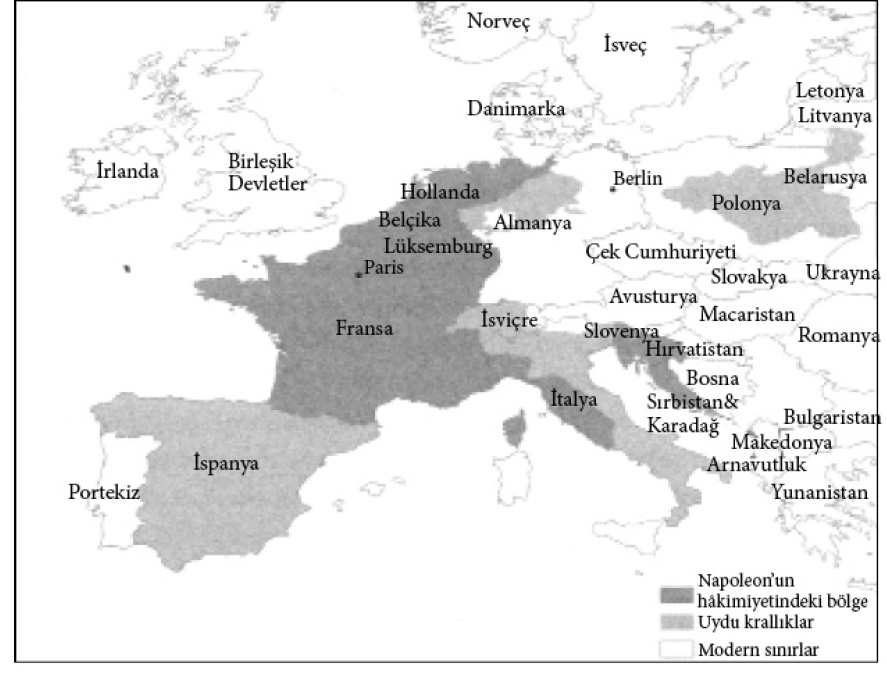

10

Refah dağılımı
Hırsızın onuru
18. yüzyıl İngiltere’si –ya da daha doğru bir ifadeyle 1707’de İngiltere, Galler ve İskoçya’nın birleşmesinin ardından Büyük Britanya– suçlularla baş edebilmek için basit bir formüle sahipti; gözden ırak olan gönülden de ırak olur, ya da en azından beladan. Pek çok suçluyu imparatorluğun ceza kolonilerine yollamışlardı. Bağımsızlık Savaşı’ndan önce hüküm giymiş suçlular, hükümlüler öncelikle Amerikan kolonilerine gönderiliyordu. 1783’ten sonra bağımsız Amerika Birleşik Devletleri artık İngiliz hükümlüleri hoş karşılamıyordu, bu nedenle İngiliz yetkililer onlara başka bir yuva bulmak zorunda kaldı. İlk düşündükleri yer Batı Afrika oldu. Fakat iklim, sıtma ve sarıhumma gibi Avrupalıların bağışıklığının olmadığı, bölgeye özgü hastalıklar o denli ölümcüldü ki, yetkililer hükümlü bile olsalar insanları “beyaz adam mezarlığına” yollamanın kabul edilemez olduğunda karar kıldılar. Ellerindeki diğer seçenek Avustralya’ydı. Kıtanın doğusundaki sahil şeridi büyük denizci Kaptan James Cook tarafından keşfedilmişti. Cook 29 Nisan 1770’de beraberindeki doğa bilimcilerin keşfettiği zengin türlere atfen Botany Körfezi adını verdiği harikulade küçük bir körfeze demir attı. Burası İngiliz hükümet yetkililerine ideal bir yer olarak görünmüştü. Ilıman bir iklime sahip olmasının yanı sıra gözden ve gönülden alabildiğine ıraktı.
Kaptan Arthur Philip kumandasındaki, hınca hınç hükümlüyle dolu 11 gemilik bir filo, 1788 Ocak ayında Botany Körfezi’ne doğru yola çıktı. Bugün Avustralya Ulusal Günü olarak kutlanan 26 Ocak’ta modern Sidney şehrinin merkezi olan Sidney Körfezi’nde kamp kurdular. Bu yeni koloniye “New South Wales” ismini verdiler. Gemilerden birinin, Duncan Sinclair’in kaptanlık ettiği Alexander’ın güvertesinde, Henry ve Susannah Cable adlarında ikisi de hükümlü olan evli bir çift bulunuyordu. Susannah hırsızlıktan hüküm giymiş ve ilk önce ölüm cezasına çarptırılmıştı. Ceza daha sonra hafifletilerek 14 yıla ve Amerikan kolonilerine gönderilmeye çevrilmiş fakat Birleşik Devletler’in bağımsızlığa kavuşmasıyla bu plan suya düşmüştü. Bu esnada Susannah, Norwich Castle Hapishanesi’nde bir başka hükümlü olan Henry’le tanışıp âşık olmuştu. 1787’de ilk filoyla Avustralya’daki yeni hükümlü kolonisine gönderilmek için seçilenler arasınaydı. Fakat Henry değildi. O tarihte Susannah ve Henry’nin genç bir oğulları vardı; onun adı da Henry’di. Bu karar ailenin dağılması anlamına geliyordu. Susannah, Thames Nehri’ne demir atmış bir hapishane gemisine nakledildi. Fakat bu yürek burkan hadisenin haberi yayılarak hayırsever Lady Cadogan’ın kulağına kadar gitti. Lady Cadogan, Cable’ları bir araya getirmek için başarılı bir kampanya düzenledi. Şimdi genç Henry’yle birlikte ikisi birden Avustralya’ya götürülüyordu. Bu arada Lady Cadogan Avustralya’da kendilerine verilmek üzere bir şeyler almak için bir de 20 pound toplamıştı. Alexander’la yelken açtılar fakat Botany Körfezi’ne vardıklarında bu mallar ortadan yok olmuştu; ya da en azından Kaptan Sinclair öyle iddia etmişti.
Cablelar ne yapabilirdi? İngiltere ya da Britanya hukukuna göre yapabilecekleri çok fazla bir şey yoktu. Her ne kadar 1789’da Britanya kapsayıcı siyasal ve ekonomik kurumlara sahip olsa da bu kapsayıcılık pratikte hiçbir hakka sahip olmayan hükümlülere kadar uzanmıyordu. Mülk sahibi olamazlardı. Kesinlikle kimseyi dava da edemezlerdi. Aslına bakılırsa mahkemeye kanıt dahi sunamazlardı. Sinclair bunu bildiği için, muhtemelen malları çalmıştı. Çaldığını hiçbir zaman itiraf etmese de Cableların kendisini dava edemeyeceklerini haykırmıştı. İngiliz hukukuna göre haklıydı ve Britanya’da mesele bu noktada bitiyordu. Fakat Avustralya’da öyle olmuyordu. Oranın askeri hâkimi David Collins’e bir mahkeme emri çıkarılmıştı:
Buranın yeni yerleşimcilerden Henry Cable ve karısı İngiltere’den ayrılmadan önce Kaptan Duncan Sinclair idaresindeki Alexander’a, bahse konu Henry Cable, karısı ve çocuğunun kullanması için maliyeti pek çok hayırsever tarafından karşılanarak toplanıp satın alınan çeşitli elbiselerden ve mevcut durumlarına uygun birkaç başka eşyadan oluşan belirli miktarda mal yüklenmiştir. Şu an limanda bulunan Alexander’ın kaptanından bahse konu malları almak için çeşitli başvurular yapılmış fakat bu girişimler az sayıda kitaptan oluşan küçük bir kısmı dışında sonuçsuz kalmış ve malların hatırı sayılır ölçüde daha değerli olan kalan kısmı halen Alexander’dadır ve kaptanı bu malı anılan sahiplerine teslim etmekte gayet ihmalkâr davranmış gibi görünmektedir.
İkisi de okumayazma bilmedikleri için Henry ve Susannah mahkeme emrini imzalayamadılar ye sadece altına birer “çarpı” attılar. “Buranın yeni yerleşimcilerinden” sözü sonradan çizilmişti fakat son derece önemliydi. Biri Henry Cable ve karısının birer hükümlü olarak tarif edildikleri takdirde davanın ilerleme şansı kalmayacağını öngörmüştü. Biri onlara bunun yerine “yeni yerleşimciler” demeyi akıl etmişti. Muhtemelen bu Hâkim Collins’e biraz fazla gelmişti ve büyük ihtimalle sözü sildiren de oydu. Fakat mahkeme emri işe yaradı. Collins davayı bir kenara atmadı ve tamamı hükümlülere muhafızlık etmek için Avustralya’ya gelen askerlerden oluşan bir jüriyle mahkeme heyetini topladı. Sinclair mahkeme huzuruna çıkarıldı. Collins’in davaya hiç de hevesli olmamasına ve jürinin Cablelar gibi hükümlülere muhafızlık etmeleri için gönderilmiş insanlardan oluşmasına rağmen Cablelar kazandı. Sinclair tüm hadiseye Cableların suçlu olması sebebiyle itiraz etti. Fakat karar kesindi ve 15 pound ödemek zorunda kaldı.
Hâkim Collins bu kararı almak için İngiliz hukukunu uygulamadı; onu yok saydı. Bu Avustralya’da karar bağlanmış ilk özel hukuk davasıydı. İlk ceza davası ise en az Britanya’dakiler kadar acayip görünüyordu. Bir hükümlü başka bir hükümlünün iki penilik ekmeğini çalmaktan suçlu bulundu. O tarihte böyle bir dava, suçluların herhangi bir şeye sahip olmalarına izin verilmediğinden, mahkemeye götürülmezdi. Fakat Avustralya Britanya değildi ve çok geçmeden Avustralya yalnızca medeni hukuk ve ceza hukukuyla değil sahip olduğu ekonomik ve siyasal kurumlarla da Britanya’dan ayrılacaktı.
New South Wales ceza kolonisi başlangıçta hükümlülerden ve çoğu asker olan muhafızlarından oluşuyordu. 1820’lere kadar Avustralya’da çok az “özgür yerleşimci” vardı ve hükümlülerin nakli New South Wales’de 1840’da sona erse de, Batı Avustralya’da 1868’e kadar sürdü. Hükümlülerin aslen angaryanın bir başka adı olan “mecburi iş” görmeleri gerekirken muhafızlar bu sayede para kazanmanın peşindeydiler. İlk başta hükümlülere ödeme yapılmıyordu. Yaptıkları işe karşılık yalnızca yiyecek veriliyordu. Ürettikleri, muhafızlara kalıyordu. Fakat bu sistem, tıpkı Virginia Kumpanyası’nın Jamestown’da yaptığı gibi, çok iyi işlemedi çünkü hükümlülerin sıkı çalışmak ya da iyi iş çıkarmak için teşvikleri yoktu. Kırbaçlanıyor ya da yalnızca 13 kilometrekarelik bir alana sahip olan ve Pasifik Okyanusu’nda, Avustralya’nın bin kilometre kadar doğusunda bulunan Norfolk Adası’na sürülüyorlardı. Ne sürgün ne de kırbaç işe yaradı; diğer seçenekse onlara verilecek teşviklerdi. Bu askerler ve muhafızlar için doğal bir fikir değildi. Hükümlü hükümlüydü, emeklerini ya da kendilerine ait mülkleri satmaları gerekmiyordu. Fakat Avustralya’da iş yapacak başka kimse yoktu. Elbette Aborijinler vardı, New South Wales’in kurulduğu tarihte sayıları muhtemelen 1 milyon kadardı. Fakat uçsuz bucaksız bir kıtaya yayılmışlardı ve New South Wales’deki nüfus yoğunlukları sömürülmelerine dayalı bir ekonomi oluşturmak için yeterli değildi. Avustralya’da bir Latin Amerika seçeneği yoktu. Böylece muhafızlar sonunda onları Britanya’dakilerden bile daha kapsayıcı kurumlara götürecek bir yol benimsediler. Hükümlülere yapmaları için bir dizi görev verildi ve eğer vakitleri kalırsa kendileri için çalışabilecek ve ürettiklerini satabileceklerdi.
Muhafızlar hükümlülerin yeni ekonomik özgürlüklerinden de faydalandılar. Üretim arttı ve muhafızlar hükümlülere mal satmak için tekeller kurdular. Bunların en kazançlısı romdu. O tarihte New South Wales, tıpkı diğer İngiliz kolonilerinde olduğu gibi, İngiliz hükümetinin atadığı bir vali tarafından yönetiliyordu. 1806’da Britanya William Bligh’i, 15 yıl önce 1789’da meşhur “Bounty’de İsyan” hadisesindeki H.M.S. Bounty gemisinin kaptanını atadı. Bligh katı bir disiplin sevdalısıydı; muhtemelen sözü edilen isyandan büyük ölçüde sorumlu olan da bu hususiyetti. Hiç değişmediği için de derhal rom tekelcilerine meydan okudu. Bu da bu defa Bligh’la eski bir asker olan John Macarthur liderliğindeki tekelciler arasında başka bir isyana yol açtı. “Rom İsyanı” olarak bilinen olaylar bir kez daha isyancıların Bligh’a üstün gelmesiyle sonuçlandı; bu defa Bounty’nin güvertesi yerine karada. Macarthur, Bligh’ı hapse tıktırdı. İngiliz yetkililer daha sonra isyanla başa çıkmak için daha fazla asker yolladılar. Macarthur tutuklandı ve İngiltere’ye geri gönderildi. Fakat çok geçmeden salıverildi ve Avustralya’ya geri dönüp koloninin hem ekonomisinde hem de siyasetinde önemli bir rol üstlendi.
Rom İsyanı ekonomik nedenlere dayanıyordu. Hükümlülere teşvik sağlanması 1790’da ikinci gemi grubuyla Avustralya’ya bir asker olarak gelen Macarthur gibilerine çok para kazandırıyordu. 1796’da işe yoğunlaşmak için ordudan ayrıldı. O zamana kadar çoktan ilk koyununu edinmiş, küçükbaş hayvancılığının ve yün ihracatının çok para kazandıracağını kavramıştı. Sidney’den içlerde en sonunda 1813’te aşılıp diğer tarafta uçsuz bucaksız otlakları meydana çıkarılan Mavi Dağlar bulunuyordu. Burası bir koyun cennetiydi. Macarthur çok geçmeden Avustralya’nın en zengin adamı oldu. O ve diğer koyun kodamanları, üzerinde koyunlarını otlattıkları araziler onların olmadığı için Squatter’lar olarak bilinmeye başladılar. Arazi İngiliz hükümetinindi fakat ilk başta bu küçük bir ayrıntıydı. Squatter’lar Avustralya’nın elitiydi, ya da daha doğrusu Squattokrasisi.
New South Wales, Squattokrasi’yle dahi Doğu Avrupa ya da Güney Amerika sömürgelerinin mutlakıyetçi rejimlerine hiçbir yönden benzemiyordu. Ne Avusturya-Macaristan’da olduğu gibi serfler ne de Meksika ve Peru’da olduğu gibi sömürülecek geniş bir yerli nüfusu vardı. Bundan ziyade, New South Wales pek çok bakımdan Jamestown, Virginia’ya benziyordu; elit kesim en sonunda Avusturya-Macaristan, Rusya, Meksika ve Peru’dakilerden önemli ölçüde daha kapsayıcı olan ekonomik kurumlar oluşturmayı kendi çıkarlarına uygun bulmuştu. Yegâne işgücü hükümlülerdi ve onları teşvik etmenin tek yolu yaptıkları iş için onlara ücret ödemekti.
Bir süre sonra hükümlülerin girişimci olabilmelerine ve diğer hükümlüleri işe almalarına izin verildi. Daha önemlisi, cezalarını dolduran hükümlülere toprak dahi veriliyordu ve tüm hakları iade ediliyordu. Bazıları zengin olmaya başlamıştı; bunların arasında okuma yazması olmayan Henry Cable bile vardı. 1798’de “Şahlanan At” adında bir oteli oldu, ayrıca bir de dükkânı vardı. Bir gemi satın alıp fok derisi ticaretine girdi. 1809’da Sidney’de yaklaşık 470 akrelik en az dokuz çiftliğin yanı sıra pek çok dükkân ve ev bulunuyordu.
New South Wales’deki bir sonraki çatışma elit kesim ile hükümlü, eski hükümlü ve ailelerinden oluşan toplumun geri kalanı arasında yaşandı. Eski muhafızların ve Macarthur gibi askerlerin öncülüğündeki elite, yün ekonomisindeki canlanma nedeniyle koloninin cazibesine kapılan bazı özgür yerleşimciler de dahildi. Arazinin büyük kısmı hâlâ elitin elindeydi; fakat eski hükümlüler ve onların torunları daha fazla hükümlü getirilmesine son verilmesini, kendi emsallerinden oluşan bir jüri tarafından yargılanmayı ve toprak edinebilmeyi istiyorlardı. Elit kesim bunların hiçbirini istemiyordu. Asıl dertleri işgal ettikleri toprakların yasal mülkiyetini edinmekti. Durum 100 yıldan daha uzun bir süre önce Kuzey Amerika’da meydana gelen olaylara benziyordu. 1. bölümde gördüğümüz gibi, sözleşmeli hizmetçilerin Virginia Kumpanyası’na karşı kazandıkları zaferleri Maryland ve Kuzey ve Güney Carolina’daki mücadeleler izledi. New South Wales’de Lord Baltimore ve Sir Anthony Ashley-Cooper’ın rollerini Macarthur ve Squatter’lar üstlenmişti. İngiliz hükümeti bir kez daha elitin tarafını tutuyor, fakat bir yandan da Macarthur ve Squatter’ların günün birinde bağımsızlıklarını ilan etme sevdasına kapılabileceklerinden korkuyorlardı.
İngiliz hükümeti 1819’da John Bigge’yi bölgedeki gelişmeleri incelemek üzere bir soruşturma komisyonunu yönetmesi için koloniye gönderdi. Bigge hükümlülerin yararlandığı haklar karşısında donakaldı ve bu ceza kolonisinin ekonomik kurumlarının temelde kapsayıcı doğası onu şaşkına çevirdi. Radikal bir revizyon tavsiye etti: Hükümlüler toprak sahibi olmayacak, bundan sonra kimse hükümlülere ücret ödeyemeyecek, aflar yasaklanacak, eski hükümlülere toprak verilmeyecek ve cezalar çok daha zalimane olacaktı. Biggie, Squatter’ları Avustralya’nın doğal aristokrasisi olarak görmüş ve onların hâkimiyetindeki otokratik bir toplum tasavvur etmişti. Fakat öyle olmadı.
Biggie zamanı geri çevirmeye çalışırken eski hükümlüler ve onların çocukları daha büyük haklar talep ediyorlardı. En önemlisi, yine Birleşik Devletler’de olduğu gibi, ekonomik ve siyasal haklarını bütünüyle sağlama almak için kendilerini karar alma sürecine dahil edecek siyasal kurumlara ihtiyaçları olduğunu fark etmişlerdi. Eşit muamele görecekleri seçimler, mevki edinebilecekleri temsil kurumları ve meclisler talep ettiler.
Eski hükümlülere ve çocuklarına liderlik eden renkli yazar, kâşif ve gazeteci William Wentworth’tü. Wentworth Mavi Dağlar’ı aşarak uçsuz bucaksız otlaklar açan ilk keşif gezisinin liderlerinden biriydi; bu dağlardaki bir kasaba hâlâ onun adını taşır. Wentworth hükümlülere sempati duyuyordu; belki de bunun nedeni eşkıyalıkla suçlanıp duruşmadan ve olası bir mahkûmiyetten kurtulmak için Avustralya’ya gönderilmeyi kabul etmek zorunda kalan babasıydı. Wentworth o tarihte daha kapsayıcı siyasal kurumların, seçimle işbaşına gelmiş bir meclisin, eski hükümlü ve ailelerinin jüri karşısında yargılanmasının ve New South Wales’e daha fazla hükümlü gönderilmemesinin ateşli bir savunucusuydu. Kurulduğu günden itibaren mevcut siyasal kurumlara saldıran Australian adında bir gazete çıkarmaya başladı. Macarthur Wentworth’den –ve elbette isteklerinden– hoşlanmıyordu. Wentworth’ün destekçilerinden oluşan bir liste yapmış ve onları şöyle tarif etmişti:
Burada ölüm cezasına çarptırılmış
Defalarca yük arabasının arkasına bağlanıp kırbaçlanmış
Londralı bir Yahudi
Yakınlarda ruhsatı iptal edilmiş Yahudi bir hancı
Köle ticareti yüzünden gönderilmiş bir mezatçı
Burada pek çok kez kırbaç cezası almış
İki hükümlünün oğlu
Borca batmış bir üçkâğıtçı
Amerikalı bir maceracı
Karakter yoksunu bir avukat
Yakınlarda müzik dükkânı batırmış bir yabancı
İki hükümlünün kızıyla evli
Eskiden tavernada çalışan hükümlü bir kadınla evli...
Ne var ki, Macarthur ve Squatter’ların güçlü muhalefeti Avustralya’daki gidişatı durdurmaya yetmedi. Temsili kurumlara talep yoğundu ve bastırılamamıştı. Vali Sir Ralph Darling 1823’e kadar New South Wales’i iyi kötü tek başına idare etmişti. O yıl İngiliz hükümetinin görevlendirdiği meclisin oluşturulmasıyla güçleri sınırlandırıldı. Tayin edilenler ilk başta Squatter’lardan ve hükümlü olmayan elit kesimdendi; Macarthur da onlardan biriydi fakat bu uzun sürmedi. 1831’de vali Richard Bourke baskıya boyun eğdi ve ilk defa eski hükümlülerin jürilerde yer almasına izin verdi. Eski hükümlüler ve aslında pek çok yeni özgür yerleşimci, Britanya’dan hükümlü sevkiyatının durdurulmasını istiyordu çünkü emek piyasasında rekabet yaratıyor ve ücretlerin düşmesine yol açıyordu. Düşük ücretler Squatter’ların hoşuna gidiyordu fakat kaybettiler. 1840’da New South Wales’e sevkiyat durdu ve 1842’de üyelerinin üçte ikisi seçimle işbaşına gelen bir yasama kurulu oluşturuldu (geri kalan üyeler atanıyordu). Eski hükümlüler aday olabiliyor ve yeteri kadar mülkleri varsa oy kullanabiliyorlardı ki, pek çoğunun vardı.
Avustralya 1850’de tüm yetişkin beyaz erkeklere oy hakkı tanıdı. Yurttaşların, eski hükümlülerin ve ailelerinin talepleri artık William Wentworth’ün ilk başta hayal ettiklerinin çok ötesine geçmişti. Aslına bakılırsa o zamana dek seçime dayanmayan bir Yasama Kurulu’nda ısrar eden muhafazakârların tarafını tutuyordu. Fakat Macarthur gibi Wentworth de daha kapsayıcı siyasal kurumlara doğru gidişatı durduramadı. 1856’da Victoria –1851’de New South Wales’den koparılmıştı– ve Tasmanya eyaletlerinde dünyada ilk kez seçimlerde etkin bir biçimde gizli oylama uygulanıyordu ve bu da oy satın almaya ve zorla oy kullandırtmaya son veriyordu. Bugün hâlâ Avustralya usulü gizli oylamayı seçimlerde oy kullanırken gizliliği sağlamanın standart yöntemi olarak görüyoruz.
Sidney, New South Wales’deki başlangıç koşulları 181 yıl öncesinde Jamestown, Virginia’daki koşullarla büyük benzerlikler gösteriyordu; Jamestown’daki yerleşimcilerin suçlulardan değil çoğunlukla zorunlu hizmetçilerden oluşması hariç. İki örnekte de başlangıç koşulları sömürücü kurumlar oluşturulmasına olanak tanımıyordu. Bu kolonilerden hiçbirinde istismar edilecek yoğun bir yerli nüfusu, kolayca elde edilebilecek altın ya da gümüş gibi değerli madenler ya da köle plantasyonlarını ekonomik bakımdan kendi ayakları üzerinde durabilir hale getirecek toprak ve tahıllar yoktu. 1780’lerde hâlâ canlı bir köle ticareti vardı ve New South Wales’in kölelerle doldurulması kazançlı olabilirdi. Fakat öyle değildi. Hem Virginia Kumpanyası ve askerleri hem de baskılara boyun eğip New South Wales’e kaçan özgür yerleşimciler kapsayıcı siyasal kurumlarla koordinasyon içinde gelişen kapsayıcı ekonomik kurumlar oluşturdular. Hatta bu süreç New South Wales’de Virginia’da olduğundan daha da sancısız bir biçimde meydana geldi ve bu eğilimi tersine çevirmeye yönelik sonraki girişimler başarısızlıkla sonuçlandı.
Birleşik Devletler gibi Avustralya da kapsayıcı kurumlar için İngiltere’ninkinden farklı bir yol izledi. İngiltere’yi önce İç Savaş’la ardından Görkemli Devrim’le sarsan toplumsal hareketler, iki ülkenin çok farklı kuruluş koşulları nedeniyle Birleşik Devletler ve Avustralya’da gerekli değildi. Bu elbette kapsayıcı kurumların hiçbir çatışma yaşanmadan kurulduğu anlamına gelmiyordu; bu süreçte Birleşik Devletler’in İngiliz koloniciliğine son vermesi gerekmişti. İngiltere’de kökleri çok derine inen mutlakıyetçi rejimin uzun bir geçmişi vardı ve yıkılması için bir devrim gerekiyordu. Birleşik Devletler ve Avustralya’da böyle bir şey söz konusu değildi. Gerçi Maryland’de Lord Baltimore ve New South Wales’de John Macarthur böyle bir role soyunmuş olabilirlerdi fakat planlarının sonuca ulaşması için toplum üzerinde yeterince güçlü bir kontrol sağlayamadılar. Birleşik Devletler ve Avustralya’da kurulan kapsayıcı kurumlar Sanayi Devrimi’nin bu ülkelere çok hızlı bir biçimde yayıldığı ve zenginleşmeye başladıkları anlamını taşıyordu. Kanada ve Yeni Zelanda gibi koloniler de bu ülkelerin izlediği yoldan gideceklerdi.
Fakat kapsayıcı kurumlar için başka yollar da vardı. Batı Avrupa’nın büyük bölümü, Fransa’da mutlakıyetçiliği yıktıktan sonra bir dizi devletlerarası çatışmaya neden olarak kurumsal reformun Batı Avrupa’nın çoğu bölgesine yayılmasını sağlayan Fransız Devrimi’nin itici gücüyle, kapsayıcı kurumlara götürecek bir üçüncü yol tutmuşlardı. Bu reformların ekonomik sonuçları, Batı Avrupa’nın çoğu bölgesinde kapsayıcı kurumların ortaya çıkması, Sanayi Devrimi’nin bu bölgelere yayılması ve ekonomik büyümenin baş göstermesiydi.
Engelleri yıkmak: Fransız Devrimi
Fransa 1789’dan önceki 300 yıl boyunca mutlakıyetçi bir monarşiyle yönetiliyordu. Fransız toplumu zümreler olarak adlandırılan üç kesime ayrılmıştı. Ruhban sınıfı İlk Zümre’yi, Aristokratlar (soylular) İkinci Zümre’yi ve geri kalan herkes de Üçüncü Zümre’yi oluşturuyordu. Farklı zümreler farklı yasalara tabiydi ve ilk iki zümre nüfusun geri kalanının sahip olmadığı haklara sahipti. Fazlasıyla sömürücü bir rejimden bekleyebileceğimiz gibi, yurttaşlar birkaç farklı vergi vermek zorundayken soylular ve ruhban sınıfı vergiye tabi değildi. Aslına bakılırsa kilise vergilerden muaf olmakla kalmıyordu, ayrıca geniş topraklara sahipti ve köylülere kendi vergilerini uygulayabiliyordu. Monarşi, soylular ve ruhban sınıfı lüks bir yaşam tarzının keyfini sürerken Üçüncü Zümre’nin büyük çoğunluğu korkunç bir yoksulluk içinde yaşıyordu. Farklı yasalar soylu ve ruhban sınıflarına yalnızca son derece avantajlı bir ekonomik pozisyonu garantilemiyor, aynı zamanda siyasal güç de sağlıyordu.
18. yüzyıl Fransız şehirlerinde yaşam hem acımasız hem de sağlıksızdı. İmalat, üyelerine iyi bir kazanç sunan ancak diğerlerinin bu mesleklere girmelerini da yeni bir iş kurmalarını engelleyen güçlü loncalar tarafından tanzim ediliyordu. Ancien régime, kendi sürekliliği ve istikrarının keyfini çıkarıyordu. Girişimcilerin ve yetenekli insanların yeni işlere girmesi istikrarsızlık yaratacağından hoş görülmezdi. Şehirlerdeki hayat acımasızsa köylerdeki hayat daha da kötüydü. Daha önce gördüğümüz gibi, halkı toprağa bağlayıp feodal lordlar için zorla çalıştırıp onlara harç ödeten serfliğin en aşırı biçimi Fransa’da uzun zamandır gerileme içindeydi. Yine de, yer değiştirmeyle ilgili kısıtlamalar vardı ve Fransız köylülerinin monarşiye, soylulara ve kiliseye ödemesi gereken bir bol miktarda feodal harç söz konusuydu.
Böyle bir arka plana dayanan Fransız Devrimi radikal bir olaydı. Kurucu Meclis 4 Ağustos 1789’da yeni bir anayasa teklifi sunarak Fransız yasalarını tamamen değiştirdi. İlk madde feodal sistemin tamamen ve tazminatsız kaldırılacağını hükme bağlıyordu. Dokuzuncu maddede ise vergilerin ödenmesindeki maddi ayrıcalıkların ilelebet kaldırıldığı, vergilerin “tüm yurttaşlardan ve tüm mülklerden aynı şekilde ve aynı yollardan toplanacağı” belirtiliyordu.
Böylelikle Fransız Devrimi feodal sistemi ve ona bağlı tüm yükümlülük ve harçları tek hamlede kaldırdı ve soylular ile ruhban sınıfının vergi muafiyetlerine son verdi. Ancak belki de en radikali, hatta o zamana göre akla hayale sığmayacak olanı, 11. maddeydi:
Tüm yurttaşlar, doğumdan gelen farklılıklara bakılmaksızın, dini, sivil ya da askeri, tüm mevki ve rütbelere hak sahibidir ve hiçbir meslekte ayrımcılık yapılmayacaktır.
Böylece artık yasalar önünde herkes için eşitlik vardı, üstelik yalnızca gündelik yaşamda ve işte değil, siyasette de. Devrimin getirdiği reformlar 4 Ağustos’tan sonra da sürdü. Ardından kilisenin özel vergiler koyma yetkisini kaldırdı ve ruhban sınıfını devlet memurlarına dönüştürdü. Katı siyasal ve sosyal rollerin kaldırılmasıyla birlikte ekonomik faaliyetlerin önündeki hayati engeller de yok edilmiş oldu. Loncaların ve tüm mesleki sınırlandırmaların kaldırılmasıyla şehirlerde daha eşit şartlar sağlandı.
Bu reformlar mutlakıyetçi Fransız hükümdarlarının saltanatını sona erdirmek için ilk adımdı. 4 Ağustos deklarasyonlarını birkaç on yıl boyunca süren istikrarsızlık ve savaş takip etti. Fakat mutlakıyetçilikten ve sömürücü kurumlardan kapsayıcı siyasal ve ekonomik kurumlara doğru geri dönüşü olmayan bir adım atılmıştı. Bu değişimleri sonunda 1870’de Üçüncü Cumhuriyet’le doruk noktasına ulaşan ve böylece Fransa’ya İngiltere’de Görkemli Devrim’in başlattığı türden bir parlamenter sistem getiren siyaset ve ekonomideki diğer reformlar izledi. Fransız Devrimi beraberinde şiddet, ıstırap, istikrarsızlık ve savaş getirdi. Buna rağmen, Fransızlar onun sayesinde Avusturya-Macaristan ve Rusya misali Doğu Avrupa’nın mutlakıyetçi rejimlerinde olduğu gibi, ekonomik büyümeyi ve zenginliği engelleyen sömürücü kurumlara saplanıp kalmadılar.
Mutlakıyetçi Fransız monarşisi nasıl olup da 1789 Devrimi’nin eşiğine gelebildi? Ne de olsa, pek çok mutlakıyetçi rejimin ekonomik durgunluklarda ve sosyal çalkantılarda bile uzun süre hayatta kalmayı başarabildiğini daha önce gördük. Devrimlerin ve radikal değişimlerin pek çok örneğinde olduğu gibi, Fransız Devrimi’ne ortam hazırlayan da bir etkenler birleşimiydi ve bu etkenler Britanya’nın hızla sanayileşmesiyle yakından ilgiliydi. Ve elbette bu yol, monarşinin rejimi istikrarlı hale getirmeye yönelik pek çok girişimi başarısızlığa uğrarken devrimin kurumsal değişim konusunda Fransa’da ve Avrupa’nın her yerinde 1789’dan önce kimsenin hayal edemeyeceği kadar başarılı çıkması nedeniyle, her zamanki gibi olumsaldı.
Fransa’daki yasa ve ayrıcalıkların çoğu Ortaçağ’dan kalmaydı. Bunlar Birinci ve İkinci Zümre’ye yalnızca nüfusun büyük çoğunluğu karşısında avantaj sağlamakla kalmıyordu, aynı zamanda kraliyet karşısında da ayrıcalıklar tanıyordu. Güneş Kral XIV. Louis, 1661’den 1715’teki ölümüne dek Fransa’ya 54 yıl hükmetti. Gerçi tahta 1643 yılında, henüz beş yaşındayken çıkmıştı. Gittikçe güçlenen bir mutlakıyete doğru yüzyıllar önce başlayan süreci devam ettirerek monarşinin iktidarını sağlamlaştırdı. Çoğu hükümdar kraliyetin özenle seçtiği önemli aristokratlardan oluşan Ayan Meclisi’nden görüş alıyordu. Ayan Meclisi aslen danışmanlıkla ilgili olmasına karşın monarşinin iktidarı üzerinde az da olsa kısıtlayıcı bir rol oynuyordu. Bu nedenle XIV. Louis hükümdarlığı boyunca Meclis’i toplamadı. Fransa onun hükümdarlığında bir miktar ekonomik büyüme yaşadı; mesela Atlantik ve sömürge ticaretine dahil olarak. Louis’nin becerikli maliye bakanı Jean-Baptiste Colbert, hükümet destekli ve kontrollü bir sanayinin gelişimine, yani bir sömürücü büyüme biçimine, nezaret etti. Bu sınırlı miktardaki büyüme neredeyse tamamen Birinci ve İkinci Zümre’nin çıkarlarına hizmet etmişti. XIV. Louis ayrıca Fransa’nın vergi sistemini de akılcılaştırmak istedi; çünkü devlet habire patlak veren savaşları, geniş daimi ordusunu ve kralın kendi lüks maiyetini, harcamalarını ve saraylarını finanse etmekte genellikle güçlük çekiyordu. Sistemin küçük soylulardan dahi vergi alamaması vergi gelirlerine büyük kısıtlama getiriyordu.
1774’te XVI. Louis tahta çıktığında çok az bir ekonomik büyüme kaydedilmiş olsa da toplumdaki değişim büyüktü. Üstelik daha önceki mali sorunlar bir mali krize dönüşmüştü; özellikle 1756 ile 1763 yılları arasında İngilizlerle yaptıkları ve Fransa’nın Kanada’yı kaybettiği Yedi Yıl Savaşı çok masraflıydı. Bazı önemli figürler borcu yeniden yapılandırıp vergileri artırarak kraliyet bütçesini denkleştirmeye çalıştılar; bunlar arasında zamanının en önemli iktisatçılarından Anne-Robert-Jacques Turgot, devrimden sonra da önemli bir rol üstlenecek olan Jacques Necker ve Charles Alexandre de Calonne bulunuyordu. Fakat hiçbiri başarılı olamadı. Calonne, stratejisi gereği, XVI. Louis’yi Ayan Meclisi’ni toplamaya ikna etti. Tıpkı I. Charles’ın 1640’da İngiliz Parlamentosu’nu topladığında İskoçlarla savaşacak bir ordunun maliyetlerinin karşılanmasına kolayca rıza göstermelerini umduğu gibi kral ve danışmanları da Ayan Meclisi’nin onun reformlarını destekleyeceğini ummuştu. Fakat Meclis umulmadık bir adım attı ve ancak temsili bir organın, Zümreler Meclisi’nin, bu tür reformlara onay verebileceğini hükme bağladı.
Zümreler Meclisi Ayan Meclisi’nden çok farklı bir organdı. İkincisi soylulardan oluşup çoğunlukla hükümdar tarafından önemli aristokratlar arasından seçilirken ilki her üç zümreden temsilciler içeriyordu ve en son 1614’te toplanmıştı. Zümreler Meclisi 1789’da Versailles’da toplandığında bir anlaşmaya varılamayacağı hemen açıklık kazandı. Uzlaştırılamaz farklılıklar vardı ve Üçüncü Zümre bunu siyasal gücünü artırmak için bir şans olarak görüp soylu ve ruhban sınıflarının kararlılıkla muhalefet etmelerine karşın Zümreler Meclisi’nde daha fazla sandalye istedi. Oturum 5 Mayıs 1789’da krizi daha da derinleştiren daha güçlü bir organı, Ulusal Meclis’i toplama kararının dışında bir çözüme ulaşmadan sona erdi. Üçüncü Zümre, özellikle tüccarlar, işadamları, meslek erbapları ve zanaatkârlar; daha fazla güç isteyen herkes, bu gelişmeleri artan nüfuzlarının kanıtı olarak gördü. Böylece Ulusal Meclis’deki müzakerelerde daha da fazla söz sahibi olmayı ve genel itibarıyla daha geniş haklara kavuşmayı talep ettiler. Ülkenin dört bir yanında bu gelişmelerin yüreklendirdiği yurttaşların sokaktaki desteği Meclis’in 9 Temmuz’da Ulusal Kurucu Meclis adıyla yeniden inşasına yol açtı.
Bu esnada ülkedeki, özellikle de Paris’teki hava giderek radikalleşiyordu. Bunun karşılığında XVI. Louis’nin etrafındaki muhafazakâr çevreler onu reform yanlısı maliye bakanı Necker’i azletmeye ikna ettiler. Bu, sokakların daha da radikalleşmesine neden oldu. Sonuç 14 Temmuz 1789’daki ünlü Bastille Baskını’ydı. Devrim bu noktadan sonra varını yoğunu ortaya koymuştu. Necker görevine iade edilirken devrimci Marquis de Lafayette Paris’teki Ulusal Muhafızlar’ın başına getirildi.
Bastille Baskını’ndan bile daha dikkat çekici olan 4 Ağustos 1789’da henüz kazandığı özgüvenle yeni bir anayasa kabul eden, hem feodalizmi hem de birinci ve ikinci zümrelerin ayrıcalıklarını kaldıran Ulusal Kurucu Meclis’in dinamikleriydi. Fakat toplumun nasıl bir şekil alması gerektiği konusunda pek çok muhalif görüş olduğu için bu radikalizm Meclis’te hizipleşmeye yol açtı. İlk adım yerel kulüplerin oluşturulmasıydı. Bunların en önemlisi daha sonra devrimin kontrolünü ele geçiren radikal Jakoben Kulübü’ydü. Bu esnada émigrés [göçmenler] denilen çok sayıda soylu ülkeyi terk ediyordu. Pek çoğu da Meclis’i dağıtması ve ister tek başına ister Kraliçe Marie Antoinette’in anavatanı Avusturya gibi yabancı bir güçten yardım alarak harekete geçmesi için kralı teşvik ediyordu. Sokaktaki yurttaşların çoğu devrimin geçen iki yılda ulaştığı kazanımların büyük bir tehdit altında olduğunu görmeye başlayınca radikalizm ivme kazandı. Ulusal Kurucu Meclis 29 Eylül 1791’de Fransa’yı herkese eşit haklar tanıyarak feodal yükümlülük ve harçları kaldıran, loncaların dayattığı tüm ticari kısıtlamaları sona erdiren bir anayasal monarşiye dönüştüren anayasanın son halini kabul etti. Fransa hâlâ bir monarşiydi fakat artık kralın çok az bir rolü, hatta aslına bakılırsa özgürlüğü, vardı.
Fakat devrimin dinamikleri Fransa ile Avusturya liderliğindeki “birinci koalisyon” arasında 1792’de patlak veren savaşla geri dönülemeyecek biçimde değişti. Savaş devrimcilerin ve kitlelerin (o zamanlar moda olan tarzda pantolonlar giyecek maddi imkâna sahip olmadıklarından onlara “pantolonsuzlar-baldırı çıplaklar” anlamına gelen sans-culottes deniyordu) kararlılığını ve radikalizmini artırdı. Bu sürecin ürünü XVI. Louis ve Marie Antoinette’in infazından sonra patlak veren; Robespierre ve Saint-Just liderliğindeki Jakoben grubun kumanda ettiği Terör Dönemi olarak bilinen evreydi. Terör Dönemi yalnızca çok sayıda aristokrat ve karşıdevrimcinin değil, eski popüler liderlerden Brissot, Danton ve Desmoulins’in de aralarında olduğu devrimin bazı önemli figürlerinin de infaz edilmesine yol açtı.
Fakat Terör Dönemi çok geçmeden kontrolden çıktı ve nihayet Robespierre ve Saint-Just’ün de dahil olduğu kendi liderlerinin infazıyla Temmuz 1794’te sona erdi. Bu dönemi önce 1795 ile 1799 arasındaki çok da başarı gösteremeyen Direktuvar yönetimi ve ardından gücün daha yoğunlaştığı Ducos, Sieyès ve Napoleon Bonaparte’dan oluşan üç kişilik Konsullük’le, nispeten istikrarlı bir evre takip etti. Daha Direktuvar döneminde askeri başarılarıyla üne kavuşan genç general Napoleon Bonaparte’ın nüfuzu 1799’dan sonra daha da arttı.
Konsül kısa sürede Napoleon’un kişisel hâkimiyetine geçti. Önce Kasım 1799’da ilk konsül olarak seçildi, ardından 1804’te devrim takvimindeki tarihe karşılık gelen ünlü 18 Brumaire darbesiyle imparatorluğunu ilan etti. 1799 ile Napoleon hükümdarlığının sona erdiği 1815 arasındaki yıllar Austerlitz, Jena-Auerstadt ve Wagram savaşları gibi kıta Avrupası’nı önünde diz çöktüren bir dizi büyük askeri zafere tanık oldu. Bu zaferler ayrıca Napoleon’un kendi iradesini, reformlarını çok geniş bir bölgede uygulamaya koymasına olanak tanıdı. Fakat devrim pek çok bakımdan dönüp dolaşıp aynı noktaya gelmiş, XVI. Louis’nin monarşisinin yerini Napoleon’un imparatorluğu almıştı. Napoleon’un 1815’teki son yenilgisinin ardından düşüşü de bir kemer sıkma dönemi ve daha kısıtlı siyasal haklar getirecek ve XVIII. Louis idaresinde Fransız monarşisinin restorasyonunu başlatacaktı. Fakat tüm bu olanlar eninde sonunda boy gösterecek olan kapsayıcı siyasal kurumların ortaya çıkışını sadece yavaşlatıyordu.
1789 devrimiyle zincirlerinden kurtulan kuvvetler Fransız mutlakıyetçiliğine son verdi ve kaçınılmaz olarak, yavaşça da olsa, kapsayıcı kurumların ortaya çıkmasına yol açtı. Böylece Fransa ve Avrupa’nın devrimci reformların ihraç edildiği bölgeleri, 19. yüzyılda çoktan başlamış sanayileşme sürecindeki yerlerini aldılar.
Devrimin ihracı
1789 Fransız Devrimi’nin arifesinde tüm Avrupa’da Yahudilere yönelik sert kısıtlamalar söz konusuydu. Örneğin Alman şehri Frankfurt’ta hayatları Ortaçağ’dan kalma bir yasanın hükümlerine göre tanzim edilmişti. Frankfurt’taki Yahudi ailelerinin sayısı 500’ü geçmiyordu ve hepsi de şehrin duvarlarla bölünmüş küçük bir kısmında, Yahudi gettosu Judengasse’de yaşamak zorundaydı. Geceleri, pazarları ya da hiçbir Hıristiyan bayramında gettoyu terk edemezlerdi.
Judengasse akıl almaz ölçüde sıkışık bir yerdi. Çeyrek mil uzunluğunda olmasına karşın genişliği üç buçuk metreden fazla değildi, hatta yer yer üç metrenin altındaydı. Yahudiler sürekli baskı ve denetim altında yaşıyorlardı. Her yıl en fazla iki yeni aile gettoya kabul ediliyor, en fazla 12 Yahudi çifti evlenebiliyordu ve bu ancak ikisi de 25 yaşın üstündeyseler mümkün olabiliyordu. Yahudiler tarla süremiyor ayrıca silah, baharat, şarap ya da tahıl ticareti yapamıyordu. 1726’ya dek belirli işaretler taşımaları gerekiyordu; bunlar erkekler için iki eşmerkezli sarı yüzük ve kadınlar için çizgili peçeydi. Tüm Yahudiler özel bir kelle vergisi vermekle yükümlüydü.
Fransız Devrimi patlak verdiğinde Frankfurt Judengasse’de Mayer Amschel Rothschild adında genç ve başarılı bir işadamı yaşıyordu. Rothschild 1780’lerin başında Frankfurt’un madeni paralar, değerli madenler ve antikayla uğraşan önde gelen sarraflarından biri haline geldi. Fakat şehirdeki tüm Yahudiler gibi o da gettonun dışında iş kuramıyor, hatta yaşayamıyordu.
Kısa bir süre sonra bu durum tamamen değişti. 1791’de Fransız Ulusal Meclisi Fransız Yahudilerini özgürlüğe kavuşturdu. Fransız orduları şimdi Rhineland’i işgal edip Batı Almanya Yahudilerini de özgürleştiriyordu. Frankfurt’taki etkileri ise daha ani ve belki de biraz istem dışı olmuştu. 1796’da Fransızlar Frankfurt’u bombaladı ve bu esnada Judengasse’nin yarısını yıktı. Yaklaşık 2 bin Yahudi evsiz kaldı ve gettonun dışına çıkmaya mecbur oldu. Rothschilds de bunlardan biriydi. Bir kez gettonun dışına çıkıp girişimcilikten men eden sayısız düzenlemeden de kurtulunca yeni iş fırsatları yakalama olanağı buldular. Bunlar arasında Avusturya ordusuna tahıl tedarik etmek için yapılan bir anlaşma da vardı ki, bu daha önce yapamayacakları bir şeydi. Rothschild 1790’ların sonunda artık Frankfurt’un en zengin Yahudilerinden biriydi ve çoktan iyi bir iş adamı olup çıkmıştı. Fakat tam özgürlük için 1811’e kadar beklemek gerekecekti; Sonunda, Napoleon’un 1806’da yeniden örgütlediği Almanya’nın Frankfurt Grandükü tayin edilen Karl von Dalberg tarafından uygulamaya koyuldu. Mayer Amschel oğluna “İşte şimdi bir yurttaş oldun” diyecekti.
Bu olaylar, özellikle Napoleon sonrası politik tasfiyeyi belirleyen 1815’teki Viyana Kongresi’ndeki gibi geriye dönüşler nedeniyle Yahudi Kurtuluşu için verilen mücadeleyi sonlandırmadı. Fakat Rothschildler için getto defteri kapanmıştı. Mayer Amschel ve oğulları kısa süre içinde Frankfurt, Londra, Paris, Napoli ve Viyana şubeleriyle 19. yüzyıl Avrupa’sının en büyük bankasının sahibi olmuşlardı.
Bu münferit bir olay değildi. Önce Fransız Devrim Orduları ardından Napoleon, kıta Avrupası’nın büyük kısmını işgal ettiler ve işgal ettikleri hemen her yerde mevcut kurumlar Ortaçağ zamanından, krallardan, prenslerden, soylulardan kalmaydı ve hem şehirlerde hem de kırsal bölgelerdeki ticareti kısıtlıyorlardı. Bu bölgelerin pek çoğunda serflik ve feodalizm Fransa’dan bile daha fazla öneme sahipti. Doğu Avrupa’da, Avusturya-Macaristan’ın hem Prusya hem de Macaristan tarafında, serfler toprağa bağlıydı. Batı’da serfliğin bu katı biçimi çoktan yok olmuştu fakat köylülerin feodal lordlara borçlu oldukları çeşitli vergiler ve angaryalar vardı. Örneğin Nassau-Usingen idari bölgesinde köylülerin mesul tutulduğu birbirinden farklı vergi ve hizmetlerin sayısı 230’du. Bunlardan biri bir hayvan kesildikten sonra alınan blood tithe’di ayrıca bir bee tithe ve bir wax tithe vardı. Eğer bir mülk alınır ya da satılırsa lorda fee, yani harç ödenirdi. Şehirlerdeki her türlü ekonomik faaliyeti tanzim eden loncalar buralarda genellikle Fransa’da olduğundan daha kuvvetliydiler. Batı Almanya’daki Köln ve Aachen şehirlerinde iplik eğirme ve dokuma makinelerinin kullanılması loncalar tarafından engellenmişti. İsviçre’de Bern’den İtalya’da Floransa’ya kadar pek çok şehir yalnızca birkaç ailenin kontrolündeydi.
Fransız Devrimi’nin liderleri ve daha sonra Napoleon, devrimi bu ülkelere ihraç ederek mutlakıyetçiliği yıktılar; feodal toprak ilişkilerine son verdiler, loncaları kaldırdılar ve sonraki bölümde daha detaylı olarak ele alacağımız çok önemli bir hukuk kaidesi olan yasa önünde eşitliği getirdiler. Böylelikle Fransız Devrimi yalnızca Fransa’yı değil, Avrupa’nın büyük kısmını kapsayıcı kurumlara ve bunların kamçılayacağı ekonomik büyümeye hazırlamış oldu.

Harita 17: Napoleon imparatorluğu.
Fransız Devrimi’nin bazı liderleri yasalar önünde eşitlik ilkesinin tüm Avrupa’ya ihraç edilmesi ve tüm mutlak monarşilerin ve prensliklerin yıkılması gerektiğine inanıyordu. Fakat Fransa 1789’u izleyen yıllarda bir kargaşa içindeydi ve başka ülkelerin siyasal meselelerine aktif olarak karışabilecek durumda değildi. Oysa daha önce gördüğümüz gibi, Fransa’daki gelişmelerden korkan bazı Avrupalı güçler sözde Kral XVI. Louis’yi kurtarmak fakat aslında Fransız Devrimi’ni bastırmak için, 1792’de Fransa’ya saldırmak üzere Avusturya’nın etrafında bir araya geldiler. Beklentiler devrimin savaş meydanlarına sürdüğü derme çatma orduların çok geçmeden darmadağın olacağı yönündeydi. Fakat başlangıçtaki bazı yenilgilerin ardından, savunmaya dayalı bir savaşta zafer kazan Fransa Cumhuriyeti oldu. Üstesinden gelinmesi gereken ciddi örgütsel sorunlar vardı. Fakat Fransızlar büyük bir yenilikle diğer ülkelerin önündeydi: seferberlik. Ağustos 1793’te başlatılan seferberlik Fransızlara savaş alanında büyük ordular sürmelerine ve daha Napoleon’un ünlü askeri becerileri sahneye çıkmadan önce bile üstünlüğe yaklaşan bir askeri avantaj yakalamalarına olanak tanımıştı.
Başlangıçtaki askeri başarı Cumhuriyet’in liderlerini yeni cumhuriyetle düşman Prusya ve Avusturya monarşileri arasında etkili bir tampon oluşturmak amacıyla Fransa’nın sınırlarını genişletmek için cesaretlendirdi. Fransızlar hemen Avusturya Hollandası ve Birleşik Eyaletler’i; temelde bugünkü Hollanda’yı zapt etti. Fransızlar ayrıca günümüzdeki İsviçre’nin büyük kısmını da ele geçirdi. Fransızlar 1790’larda her üç bölgede de güçlü bir kontrole sahiptiler.
Almanya başlarda öfkeli bir biçimde karşı koymuştu. Fakat 1795’e gelindiğinde Fransızlar Almanya’nın batı kısmında, Ren Nehri’nin sol kıyısında uzanan Rhineland’ı kesin kontrolü altına almıştı. Prusyalılar Basel Antlaşmasıyla bu gerçeği kabul etmek zorunda kaldılar. Fransızlar 1795 ile 1802 arasında tüm Almanya’da bir tek Rhineland’ı ellerinde tuttular. 1802’de Rhineland resmen Fransa’ya dahil edilmişti.
İtalya 1790’ların ikinci yarısında Avusturyalılar karşısında esas savaş bölgesi olmayı sürdürdü. Savoy 1792’de Fransa tarafından topraklarına katıldı ve Napoleon’un Nisan 1796’daki işgaline dek bir yenişememe durumu hüküm sürdü. Napoleon 1797 başlarındaki ilk büyük kıtasal seferinde Avusturyalıların ele geçirdiği Venedik dışında neredeyse tüm kuzey İtalya’yı fethetti. Ekim 1797’de Avusturyalılarla imzalanan Campo Formio Antlaşması Birinci Koalisyon Savaşı’nı sona erdirdi ve Kuzey İtalya’da Fransa kontrolündeki bir grup cumhuriyeti tanıdı. Ne var ki, Fransızlar bu anlaşmadan sonra bile Papalık Devleti’ni işgal edip Mart 1798’de Roma Cumhuriyeti’ni kurarak İtalya üzerindeki hâkimiyetlerini genişlettiler. Ocak 1799’da Napoli fethedildi ve Partenopea Cumhuriyeti kuruldu. Avusturyalılara kalan Venedik hariç, Fransızlar ister Savoy örneğinde olduğu gibi doğrudan ister Cisalpine, Ligurya, Roma ve Partenopea cumhuriyetleri gibi uydu devletler aracılığıyla tüm İtalya Yarımadası’nın hâkimiyetini ele geçirmişlerdi.
1798 ile 1801 yılları arasındaki İkinci Koalisyon Savaşı’nda da gidiş gelişler oldu fakat temelde Fransızların hâkimiyetiyle sonuçlandı. Fransız Devrim Orduları fethettikleri ülkelerde mevcut serflik kalıntılarını ve feodal toprak ilişkilerini kaldırıp yasa önünde eşitlik getirerek süratle radikal bir reform süreci yürütmeye başladılar. Ruhban sınıfının özel statüsü ve gücü ellerinden alındı ve kentsel alanlardaki loncalar ya ortadan kaldırıldı ya da en azından güçten düşürüldü. 1795’teki Fransız işgalinin hemen ardından Avusturya Hollandası’nda ve Fransızların kendi ülkelerindekilere çok benzeyen siyasal kurumlarla Batavya Cumhuriyeti’ni kurdukları Birleşik Eyaletler’de böyle oldu. İsviçre’deki durum da buna benziyordu, loncalar hem de feodal toprak sahipleri ve Kilise yenilgiye uğratıldı; feodal ayrıcalıklar kaldırıldı, loncalar yasaklanıp kamulaştırıldı.
Napoleon, Fransız Devrim Orduları’nın başlattığını şu ya da bu biçimde sürdürdü. Napoleon her şeyden önce fethettiği bölgelerde sıkı bir hâkimiyet kurmakla ilgileniyordu. Bu bazen yerel elitle anlaşma yapmayı ya da ailesini ve yakınlarını göreve getirmeyi gerektiriyordu. Fakat devrimin reformlarını sürdürmeyi ve derinleştirmeyi de samimiyetle arzuluyordu. En önemlisi Roma hukukunu ve adalet önünde eşitlik ilkesini Napoleon Kanunları olarak bilinen bir hukuk sistemi içinde toplamıştı. Napoleon bu kanunları mirası olarak görüyor ve hâkimiyeti altındaki her bölgede uygulanmasını istiyordu.
Elbette Fransız Devrimi’nin ve Napoleon’un getirdiği reformlar geri dönülmez değildi. Bazı yerlerde, örneğin Almanya’nın Hanover şehrinde, eski elitler Napoleon’un düşüşünün ve Fransızların elde ettikleri şeylerin çoğunun sonsuza dek yok oluşunun hemen ardından yeniden eski konumlarına geldiler. Fakat başka pek çok yerde feodalizm, loncalar ve soylular ya kalıcı bir biçimde yok edilmiş ya da güçten düşürülmüştü. Örneğin, pek çok yerde Fransızlar çekildikten sonra bile Napoleon Kanunları yürürlükte kalmıştı.
Neticede, Fransız orduları Avrupa’da büyük ıstıraba neden oldular fakat aynı zamanda mevcut durumu da kökten değiştirdiler. Avrupa’nın büyük kısmında feodal ilişkiler; loncalarını gücü; hükümdar ve prenslerin mutlak hâkimiyeti; ruhban sınıfının ekonomik, sosyal ve siyasal güç/iktidar üzerindeki kontrolü ve insanlara doğuştan gelen statülerine göre muamele eden ancien régime’in temel yapısı ortadan kalktı. Bu değişiklikler sanayileşmenin bu yerlere kök salmasına olanak tanıyacak türde kapsayıcı ekonomik kurumlar oluşturdu. 19. yüzyılın ortasına gelindiğine, sanayileşme Fransa’nın hâkimiyetindeki hemen her yerde hızlı bir ilerleme gösterirken Avusturya-Macaristan ve Rusya gibi Fransızların fethetmediği ya da Polonya ve İspanya gibi Fransızların geçici ve sınırlı bir hâkimiyet kurdukları yerler hâlâ büyük ölçüde durgundu.
Modernliğin peşinde
1867 sonbaharında, feodal Japonya’nın Satsuma Beyliği’nin önde gelen saray adamlarından Õkubo Toshimichi, bugünün Tokyo’su başkent Edo’dan Yamaguchi kentine seyahat etti. 14 Ekim’de Chõshū Beyliği’nin liderleriyle görüştü. Basit bir teklifi vardı: Güçlerini birleştirip ordularını Edo’nun üstüne yollayacak ve Şogun’u, Japonya’nın hükümdarını devireceklerdi. Õkubo Toshimichi o zamana kadar Tosa ve Hizen beyliklerinin liderlerini çoktan saflarına katmıştı. Güçlü Chõshū’nun liderleri kabul eder etmez gizli Satcho İttifakı kurulmuş oldu.
1600’den beri Tokugawa ailesinin (liderleri 1603’de şogun [kumandan] unvanını almıştı) hâkimiyetindeki Japonya 1868’de ekonomik bakımdan geri kalmış bir ülkeydi. Japon İmparatoru devre dışı kalmış ve tamamen törensel bir rol üstlenmişti. Tokugawa şogunları, Shimazu ailesinin idaresindeki Satsuma’nın da aralarında bulunduğu, kendi beyliklerini yönetip vergi alan bir feodal lordlar sınıfının hâkim üyeleriydi. Bu lordlar, ünlü samuraylarının yardımıyla katı mesleki kategorileri, ticaret kısıtlamaları ve çiftçilerden alınan yüksek vergilerle Ortaçağ Avrupası’nı andıran bir toplum idare ediyordu. Şogun ülkeyi Edo’dan idare ediyordu; tekeline aldığı dış ticareti buradan kontrol ediyordu ve yabancılara ülkeyi yasaklamıştı. Siyasal ve ekonomik kurumlar sömürücüydü ve Japonya fakirdi.
Fakat şogunun hegemonyası eksiksiz değildi. Tokugawa ailesinin ülkenin kontrolünü ele geçirdiği 1600’de bile herkese hükmedemiyorlardı. Ülkenin güneyinde Satsuma Beyliği oldukça özerk kalmıştı; öyle ki, Ryukyu Adaları üzerinden dış dünyayla bağımsız bir ticaret sürdürmelerine bile izin verilmişti. İşte Õkubo Toshimichi’nin 1830’da doğduğu yer de Satsuma’nın başkenti Kagoshima’ydı. Bir samurayın oğluydu ve o da samuray olmuştu. Yeteneği ilk başlarda Satsuma lordu Shimazu Nariakira tarafından keşfedilmiş ve onun sayesinde hızla bürokraside hızla yükselmişti. O tarihte Shimazu Nariakira çoktan Satsuma birliklerini şogunu devirmek için kullanacağı bir plan formüle etmişti. Asya ve Avrupa’yla ticareti geliştirmek, eski feodal ekonomik kurumları kaldırmak ve Japonya’da modern bir devlet kurmak istiyordu. Daha gelişme aşamasındaki planı 1858’deki ölümüyle yarım kaldı. Halefi Shimazu Hisamitsu ise daha ihtiyatlıydı; en azından ilk başlarda.
Õkubo Toshimichi Japonya’nın feodal şogunluğun devrilmesine ihtiyacı olduğuna giderek daha fazla inanır hale geldi ve en sonunda Shimazu Hisamitsu’yu da ikna etti. Gerekli desteği sağlamak için imparatorun devre dışı bırakılmasına duyulan öfkeyi paravan olarak kullandılar. Õkubo Toshimichi’nin Tosa Beyliği’yle birlikte imzaladığı antlaşmada, “Bir ülkede iki hükümdar olmaz, bir evin iki efendisi olmaz, devlet tek yöneticiye intikal eder” denmekteydi. Fakat asıl niyet sırf imparatoru eski gücüne kavuşturmak değil, siyasal ve ekonomik kurumları tamamen değiştirmekti. Tosa cephesinde antlaşmaya imza koyanlardan biri Sakamoto Ryõma’ydı. Satsuma ve Chõshū ordularını harekete geçirirken Sakamoto Ryõma da şoguna iç savaş çıkmasın diye çekilmesi için baskı yapan sekiz maddelik bir plan sundu. Plan gayet radikaldi ve birinci madde ülkedeki siyasal iktidarın devrini içeriyordu. İkinci, üçüncü, dördüncü ve beşinci maddelerde şöyle deniyordu:
2.İki yasama organı, bir üst meclis ve bir alt meclis kurulacak ve tüm hükümet kararları genel kanı esas alınarak karara bağlanacaktır.
3.Lordlar, soylular ve halkın geneli arasından seçilecek kabiliyetli insanlar konsil üyesi olarak atanacak ve miadını dolduran eskiden kalma geleneksel makamlar kaldırılacaktır.
4.Dış ilişkiler genel kanı esas alınarak hazırlanmış uygun düzenlemelere göre yürütülecektir.
5.Daha önceki mevzuat ve düzenlemeler feshedilip yeni ve uygun bir yasa seçilecektir.
Şogun Yoshinobu istifa etmeyi kabul etti ve 3 Ocak 1868’de Meici Restorasyonu ilan edildi. İmparator Kõmei ve bir ay sonra oğlu Meici iktidara geldiler. Satsuma ve Chõshū kuvvetleri Edo’yu ve imparatorluk başkenti Kyõto’yu işgal etseler de Tokugawaların yeniden iktidara gelip şogunluğu kurmaya teşebbüs edeceklerinden korkuyorlardı. Õkubo Toshimichi Tokugawaların tamamen yok edilmesini istiyordu. Tokugawa Beyliği’ni ilga edip topraklarına el koyması için İmparatoru ikna etmişti. 27 Ocak’ta eski şogun Yoshinobu’nun Satsuma ve Chõshū kuvvetlerine hücum etmesiyle başlayan iç savaş, sonunda Tokugawaların bozguna uğratıldığı yaza kadar tüm şiddetiyle sürdü.
Japonya’da Meici Restorasyonu’nu dönüştürücü bir kurumsal reformlar süreci izledi. 1869’da feodalizm kaldırıldı ve 300 fief devlete intikal ederek atanmış bir valinin idaresindeki vilayetlere dönüştürüldü. Vergilendirme merkezileştirildi ve eski feodal düzenin yerini modern bir bürokratik devlet aldı. 1869’da tüm sosyal sınıfların adalet önünde eşitliği kabul edildi, iç göç ve ticaret üzerindeki sınırlamalar kaldırıldı. Samuray sınıfı kaldırıldı; tabii bu bazı isyanların bastırılmasıyla mümkün oldu. Bireysel toprak mülkiyeti hakkı tanındı ve kişilere her türlü ticarete girme serbestisi getirildi. Devlet yoğun biçimde altyapı faaliyetlerine koyuldu. Mutlakıyetçi rejimlerin demiryollarına yaklaşımının aksine, Japon rejimi 1869’da Tokyo ve Osaka arasına buharlı gemi hattı kurdu ve Tokyo ile Yokohama arasında ilk demiryolunu inşa etti. Bunlara ilaveten bir imalat sanayii tesis etti ve maliye bakanı Õkubo Toshimichi uyumlu bir sanayi hamlesinin başlangıcına nezaret etti. Çömlek, top ve pamuk ipliği fabrikaları inşa eden ve İngiltere’den tekstil makineleri ithal ederek 1861’de Japonya’da ilk modern iplikhanesini kuran Satsuma Beyliği’nin lordu, bu faaliyetlerin liderlerinden biriydi. Ayrıca iki modern tersane inşa etmişti. 1890’a gelindiğinde Japonya yazılı bir anayasası olan ilk Asya ülkesiydi ve seçilmiş bir parlamento olan diet’i ve bağımsız bir yargı sistemi olan anayasal bir monarşi kurmuştu. Bu değişiklikler Japonya’nın Asya’da Sanayi Devrimi’nden en çok istifade eden ülke haline gelmesinde son derece belirleyici rol oynadılar.
19. yüzyıl ortalarında hem Çin hem de Japonya, mutlakıyetçi rejimlerin idaresinde zayıf düşmüş yoksul ülkelerdi. Çin’deki rejim yüzyıllar boyunca değişime şüpheyle yaklaşmıştı. Çin ve Japonya arasında pek çok benzerlik olsa da –daha önce Çin imparatorlarının yaptığı gibi Tokugava şogunluğu da 17. yüzyılda denizaşırı ticareti yasaklamıştı, ayrıca hem ekonomik hem de siyasal değişime karşıydı– belirgin siyasal farklılıklar da vardı. Çin mutlak güce sahip bir imparator tarafından yönetilen merkezi bir bürokratik imparatorluktu. Kuşkusuz imparatorun iktidarı bazı tehditlerle karşı karşıya kalıyordu, bunların en önemlisi isyan tehlikesiydi. 1850 ile 1864 yılları arasında milyonlarca insanın çatışmalar ya da kitlesel açlık nedeniyle hayatını kaybettiği Taiping İsyanı, tüm güney Çin’i harabeye çevirdi. Fakat imparatora yönelik muhalefet kurumsallaşmadı.
Oysa Japon siyasal kurumlarının yapısı farklıydı. Şogunluk imparatoru devre dışı bırakmıştı fakat daha önce gördüğümüz gibi Tokugava iktidarı mutlakıyetçi değildi; Satsuma Beyliği gibi beylikler bağımsızlıklarını sürdürmüşlerdi, hatta kendi başlarına dış ticaret bile yapabiliyorlardı.
Fransa için olduğu gibi Çin ve Japonya için de İngiliz Sanayi Devrimi’nin önemli sonuçlarından biri, askeri bakımdan saldırıya açık hale gelmeleriydi. 1839-1842 yılları arasındaki Birinci Afyon Savaşı’nda İngiliz deniz gücü Çin’in gururunu kırmış ve aynı tehdit Birleşik Devletler’in Komodor Matthew Perry komutasındaki savaş gemileri 1853’de Edo Körfezi’ne girdiğinde Japonlar için de gayet ciddi bir hal almıştı. Ekonomik geri kalmışlığın askeri geri kalmışlığa yol açtığı gerçeği Shimazu Nariakira’nın şogunluğu devirip Meici Restorasyonu’yla sonuçlanacak değişiklikleri harekete geçirme planının arkasındaki itici gücün bir paçasıydı. Satsuma Beyliği’nin liderleri ekonomik büyümenin –hatta belki de Japonya’nın bekasının– ancak kurumsal reformlarla sağlanabileceğini kavramışlardı fakat şogun buna karşı çıkıyordu çünkü iktidarı mevcut kurumlar silsilesine bağlıydı. Reformların uygulanabilmesi için şogunun devrilmesi gerekiyordu ve öyle oldu. Çin’deki durum da buna benziyordu fakat başlangıçtaki farklı siyasal kurumlar imparatoru devirmeyi daha zor hale getiriyordu ve böyle bir şey ancak 1911’de gerçekleşebildi. Çinliler kurumlarda reforma gitmek yerine İngiliz ordusuyla modern silahlar ithal ederek boy ölçüşmeye çalıştı. Japonlarsa kendi askeri sanayilerini kurdular.
Başlangıçtaki bu farklılıklar nedeniyle iki ülkenin 19. yüzyılın meydan okumalarına farklı biçimde karşılık vermesiyle Japonya ve Çin, Sanayi Devrimi’nin yarattığı kritik dönemeç karşısında birbirlerinden çarpıcı biçimde uzaklaştılar. Japon kurumları dönüşüm geçirip ekonomi hızlı bir büyüme rotasına girerken Çin’de kurumsal değişimin itici güçleri yeterince güçlü değildi ve sömürücü kurumlar Mao’nun 1949’daki komünist devrimiyle daha da kötü bir hal alana dek neredeyse hiç hız kesmeden iş başında kaldılar.
Dünya eşitsizliğinin kaynağı
Bu ve bundan önceki üç bölümde İngiltere’de Sanayi Devrimi’ni mümkün kılan kapsayıcı ekonomik ve siyasal kurumların nasıl ortaya çıktığı ve neden belirli ülkeler Sanayi Devrimi’nden yararlanıp büyüme rotasına girerken diğerlerinde böyle olmadığı ya da, aslına bakılırsa, sanayileşmenin başlamasına dahi azimle karşı çıktıkları anlatıldı. Bir ülkenin sanayileşmeyi benimseyip benimsememesi büyük ölçüde kurumlarına bağlıdır. İngiliz Görkemli Devrimi’ne benzer bir dönüşüm geçiren Birleşik Devletler 18. yüzyılın sonuna kadar çoktan kendi kapsayıcı siyasal ve ekonomik kurumlarını geliştirmişti. Böylelikle Britanya Adaları’ndan gelen yeni teknolojilerden yararlanan ilk ülke oldular ve kısa zamanda Britanya’yı geride bırakarak sanayileşmenin ve teknolojik değişimin öncülüğünü üstlendiler. Biraz daha geç başlayıp biraz daha az önemsenmesine karşın Avustralya da kapsayıcı kurumlar için benzer bir rota izledi. Tıpkı Birleşik Devletler’de ve İngiltere’de olduğu gibi yurttaşlarının kapsayıcı kurumlara sahip olabilmek için mücadele etmeleri gerekti. Bu kurumlar tesis edildiğinde Avustralya da kendi ekonomik büyüme sürecini başlattı. Avustralya ve Birleşik Devletler sanayileşip hızla büyüyebildiler; çünkü nispeten kapsayıcı kurumları yeni teknolojiler, yenilik ya da yaratıcı yıkım için engel oluşturmadı.
Oysa diğer Avrupa sömürgelerinde böyle olmadı. Onların dinamikleri Avusturya ve Birleşik Devletler’deki dinamiklerin tam tersiydi. Her ne kadar yurttaşları siyasal haklar ve kapsayıcı kurumlar için büyük bir mücadele vermek zorunda kalmış olsa da, yerli nüfusun ya da sömürülecek kaynakların yokluğu Avustralya ve Birleşik Devletler’deki koloniciliği çok farklı bir duruma dönüştürdü. Avrupalıların Asya, Karayipler ve Güney Amerika’da sömürgeleştirdiği diğer pek çok yer gibi Maluku Adaları’ndaki yurttaşların böyle bir mücadeleyi kazanmak için çok az bir şansları vardı. Avrupalı sömürgeciler bu bölgelerde baharat ve şekerden altın ve gümüşe kadar değişen değerli kaynakları sömürmek için ya yepyeni sömürücü kurumlar dayattılar ya da hangi sömürücü kurumları buldularsa kendilerine mal ettiler. Bu bölgelerin pek çoğunda kapsayıcı kurumların ortaya çıkma ihtimalini son derece düşüren bir dizi kurumsal değişimi harekete geçirdiler. Bazılarında gelişmekte olan tüm sanayileri ya da mevcut ekonomik kurumları doğrudan yok ettiler. Bu bölgelerin çoğu 18. yüzyılda, hatta 20. yüzyılda bile sanayileşmeden yararlanacak durumda değillerdi.
Avrupa’nın geri kalanındaki dinamikler de Avusturya ve Birleşik Devletler’inkilerden gayet farklıydı. 18. yüzyılın sonunda Britanya’da Sanayi Devrimi hızını artırırken çoğu Avrupa ülkesi hükümdarların ve temel geliri kaynağı sahip oldukları topraklar ya da yasaklayıcı giriş engelleri sayesinde yararlandıkları ticari ayrıcalıklar olan aristokrasilerin kontrolündeki mutlakıyetçi rejimler tarafından yönetiliyordu. Fakat sanayileşme sürecinin ortaya çıkaracağı yaratıcı yıkım liderlerin ticaretten elde ettiği kârları azaltarak, kaynakları ve iş gücünü topraklarından uzaklaştıracaktı. Aristokrasiler sanayileşmenin ekonomik kaybedenleri haline gelecekti. Daha da önemlisi, sanayileşme süreci hiç şüphesiz istikrarsızlık yaratıp siyasal iktidar tekellerine yönelik meydan okumalara yol açacağından siyasal kaybedenlere de dönüşeceklerdi.
Fakat Britanya’daki kurumsal dönüşümler ve Sanayi Devrimi Avrupa devletleri için yeni fırsatlar ve yeni meydan okumalar yarattı. Batı Avrupa’da mutlakıyetçilik hüküm sürse de bölge geçen bin yılda Britanya’yı etkileyen kurumsal sürüklenmeden büyük ölçüde nasibini aldı. Fakat Doğu Avrupa’da, Osmanlı İmparatorluğu’nda ve Çin’de durum gayet farklıydı. Bu farklılıklar sanayileşmenin yaygınlaşması bakımından önem taşıyordu. Tıpkı Kara Ölüm ya da Atlantik ticareti gibi bu kritik dönemeç de kurumlar üzerine cereyan eden ve değişime karşı çıkanları zayıflatıp destekleyenleri güçlendiren kendi kadim mücadelesini yoğunlaştırdı. 1789 Fransız Devrimi temel etkenlerden biriydi. Fransa’da mutlakıyetçiliğin sona ermesi kapsayıcı kurumların önünü açtı ve Fransızlar en sonunda sanayileşmeye ve hızlı ekonomik büyümeye kavuştular. Aslında Fransız Devrimi bundan fazlasını yaptı. Bazı komşu ülkeleri işgal edip sömürücü kurumlarını zorla reforma tabi tutarak kendi kurumlarını ihraç etti. Böylece yalnızca Fransa’da değil Belçika’da, Hollanda’da, İsviçre’de ve Almanya’yla İtalya’nın bazı kesimlerinde sanayileşmenin önünü açtı. Daha doğuda Kara Ölüm’den sonraki reaksiyon da buna benziyordu; feodalizm dağılacağına yoğunlaşmıştı. Avusturya-Macaristan, Rusya ve Osmanlı İmparatorluğu ekonomik bakımdan daha da geri kaldılar fakat mutlakıyetçi monarşileri Birinci Dünya Savaşı’na kadar yerlerinde kalmayı başardı.
Mutlakıyetçilik dünyanın başka yerlerinde de Doğu Avrupa’daki kadar dirençliydi. Bu Ming-Qing dönüşümünün kendini istikrarlı bir tarım toplumu inşa etmeye adamış, uluslararası ticarete ve piyasa ekonomisine karşı bir devlete neden olan Çin için bilhassa geçerliydi. Fakat Asya’da önemli kurumsal farklılıklar da söz konusuydu. Çin Sanayi Devrimi’ne Doğu Avrupa gibi reaksiyon gösterdiyse Japonya da Batı Avrupa gibi gösterdi. Tıpkı Fransa’da olduğu gibi, sistemi değiştiren bir devrim oldu; bu seferki devrim Satsuma, Chõshū, Tosa ve Hizen beyliklerinin asi lordlarının liderliğinde gerçekleşmişti. Bu lordlar şogunu devirdi, Meici Resorasyonu’nu gerçekleştirdi ve Japonya’yı kurumsal reformlar ve ekonomik büyüme rotasına soktu.
Ayrıca mutlakıyetçiliğin dış dünyadan soyutlanan Etiyopya’da da direnç gösterdiğini gördük. Kıtanın başka yerlerinde, İngiliz kurumlarının dönüşümüne yardımcı olan aynı uluslararası ticaret gücü, batı ve orta Afrika’nın büyük bölümünü köle ticareti vasıtasıyla son derece sömürücü kurumlara mahkûm etti. Bu kimi bölgelerdeki toplumları yok ederken kimi bölgelerde de sömürücü köleci devletlerin ortaya çıkmasına yol açtı.
İzah ettiğimiz kurumsal dinamikler nihai olarak hangi ülkelerin 18. yüzyılın sunduğu önemli fırsatlardan yararlandığını ve hangilerinin bunu başaramadığını belirledi. Bugün gözlemlediğimiz dünya eşitsizliğinin kaynağı bu ayrışmada bulunabilir. Birkaç istisna dışında günümüzün zengin ülkeleri 19. yüzyılda başlayan sanayileşme sürecine ve teknolojik değişimi benimseyenlerdir; fakir olanlar da benimsemeyenler.